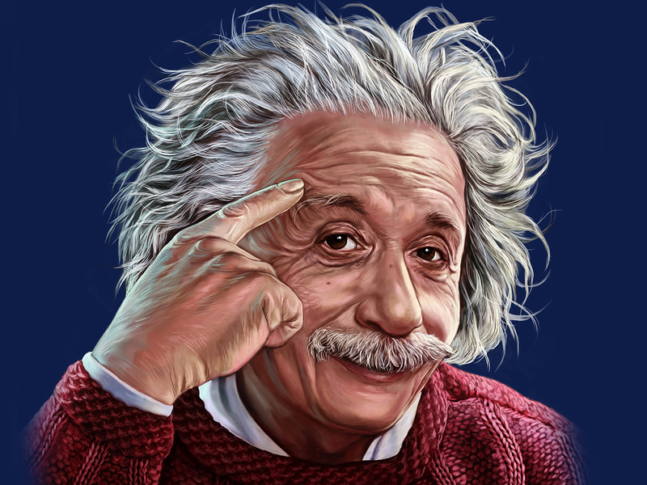

this is the real kings
- charless babage
- Albert Einstein
- king sir lassac newton
- tiktok
Albert Einstein was a famous physicist. His research spanned from quantum mechanics to theories about gravity and motion. After publishing some groundbreaking papers, Einstein toured the world and gave speeches about his discoveries.
this is the real kings